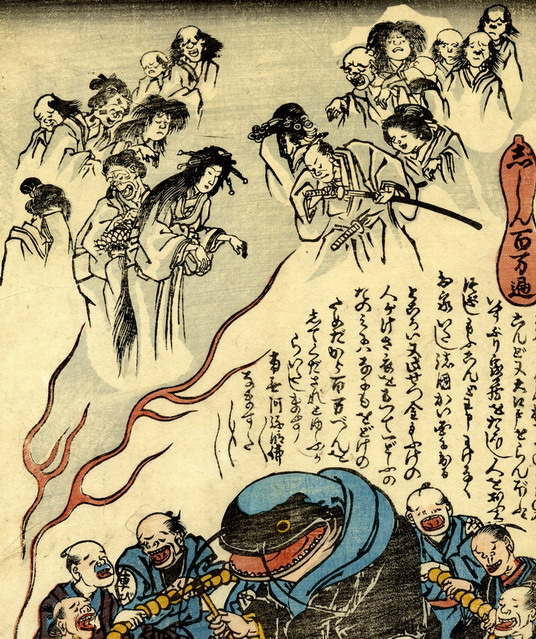

地震で亡くなった死者の霊が、炎の中に浮かび上がっている。両手をたらした芸者や、刀を抜こうとしている男の姿が見える。全員、白黒で描かれている。
出典：親書誌：U426_nichibunken_0165：志しん百万遍；ジシンヒャクマンベン／日付：2010／資源識別子：U426_nichibunken_0165_0002_0000
Copyright (c)2010- International Research Center for Japanese Studies, Kyoto, Japan. All rights reserved.